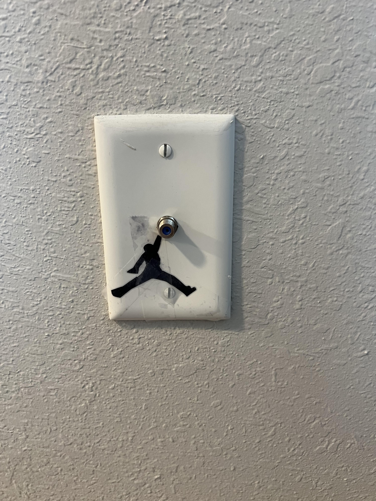

Remix-Emulation
This was an assigment for the CTK class "Basic Skills in the Digital Arts" This project tasked us with taking a piece of media and creating some kind of content utilizing it; whether that be a musical remix of an already existing track, a written piece of fan-art, or a drawing in the style of a popular artist, the choice was up to us. Since I typically work in the audio field, I went with a remix of the song "Bulletproof" by La Roux. This was one of the most fun projects that I did, and I am really happy with how it turned out.
Random Acts of Vandalism
This was probably my favorite project that I completed this year. It is such a cool idea for a school project; take something that is literally a crime and spin it in a way to not only encourage creativity and out of the box thinking but also just a fun and harmless way to provide a sight to see. For my project, I was pretty stumped for a while. Then, one day while doing homework in my apartment, I looked up to notice a plug that I had never really noticed. It was a cable socket, and I thought of my idea then. I cut out the silhouette of the iconic Jordan Brand and taped it to look like the logo. I love the way this looks and I still have it up today.
Daily Habit Practice
This was a project that I enjoyed but wish I had worked a bit harder on. For this project, we were tasked with picking one creative habit that we were going to do every day for a week, and at the end of the week we would showcase what we had made. During that week I was incredibly busy with school among other things, and because of that I didn't really have the time each day that I would have liked to dedicate to it. That being said, I am happy with how this beat came out. I remember that I really wanted to sample this Japanese sounding harp that I had found, and I am happy with it